Tutorial 01: Materials
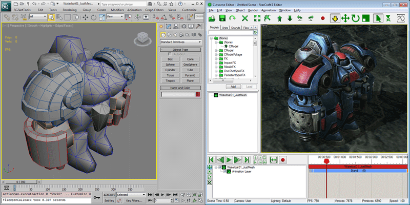StarCraft II uses a flexible material system to control how 3D assets appear in game. This tutorial provides an overview of the basic features with the intent of teaching you the necessary tools to get your custom models and textures to show up in game. We will take a model from simple grey mesh and loose textures to a model capable of being viewed inside of StarCraft II.
Getting Started
-
Open 'Waterbat_Tutorial01_Mesh.max'. It should appear as grey mesh and the scene should be generally empty. This will be the starting point for this tutorial.

Basic Material Setup
-
We need to apply a StarCraft II Material to our mesh before we will be able to do anything fun, like see it in game. Open the Compact Material Editor, which can be accessed through 'Rendering > Material Editor > Compact Material Editor' menu item. Click the "Standard" button in the top right of the Material Properties. You will be presented with a list of possible Material Types to use. From this list select, 'Materials > Standard > SC2 Standard Material'. This is the most common Material Type for an asset in StarCraft II. Hit 'OK'.
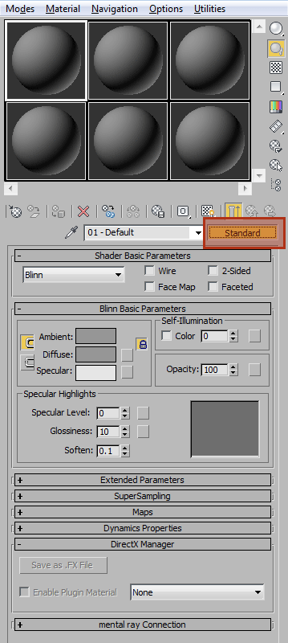 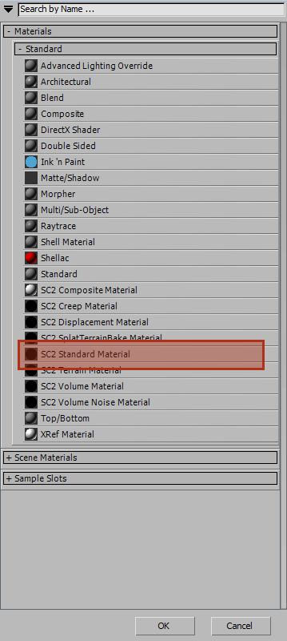 -
When you return to the Material Editor, you should be looking at an image similar to this with 'SC2 Standard' where 'Standard' once was. In the rollout for SC2 Standard, scroll down to 'Material Texture Parameters', and click the button to the right of 'Diffuse . . . . .' to begin editing the Diffuse Texture, the basic color information for your asset.
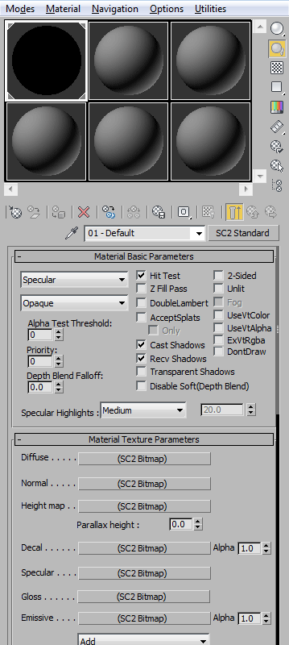 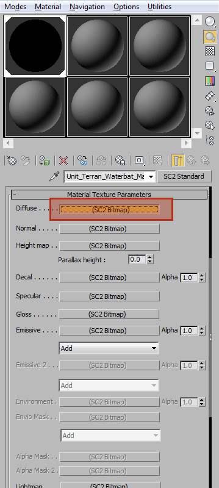 -
The subsequent of dialog will be that of SC2 Bitmap, the custom Bitmap type for StarCraft II compatible images in 3ds Max. Click the button to the right of 'Bitmap:' to pick the exact texture file to use. You should be prompted with a file browser. Find and select 'Waterbat_Diff.tga'. Then scroll down to the 'Color Operations' rollout, and change the dropdown to 'Use RGB'. This will disable the Alpha Channel in the texture, which is what we want for now.
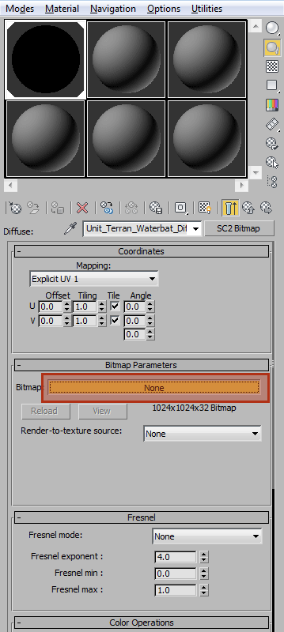 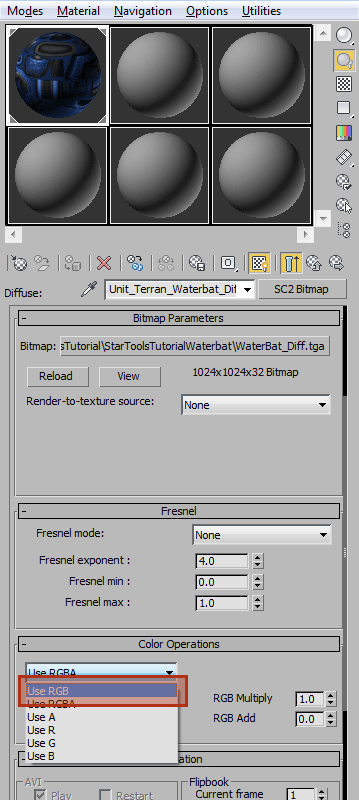 -
Make sure your material is properly applied to the model. At this point, if you enable 'Show Map in Viewport' for the Diffuse Texture, your viewport should have a colored mesh showing.
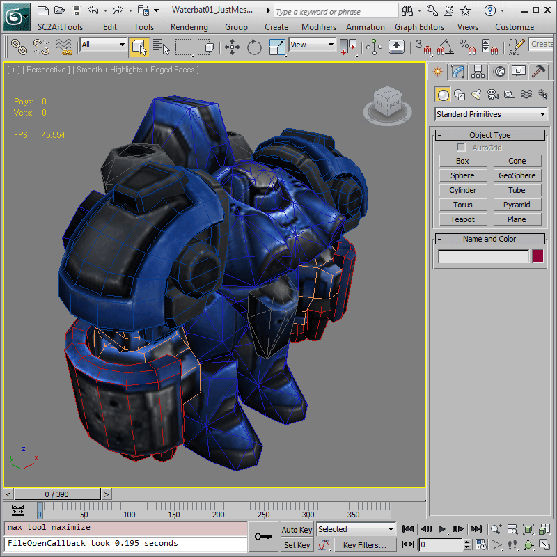
Previewing Your Model
-
The StarCraft II Art Tools allow for quick previewing in the StarCraft II Editor from 3ds Max. If you have the StarCraft II Editor running, you can export your model directly into the Cutscene Editor Module. To do this, open the StarCraft II Editor. Then in 3ds Max, use the 'SC2ArtTools > Export > Preview' menu item.
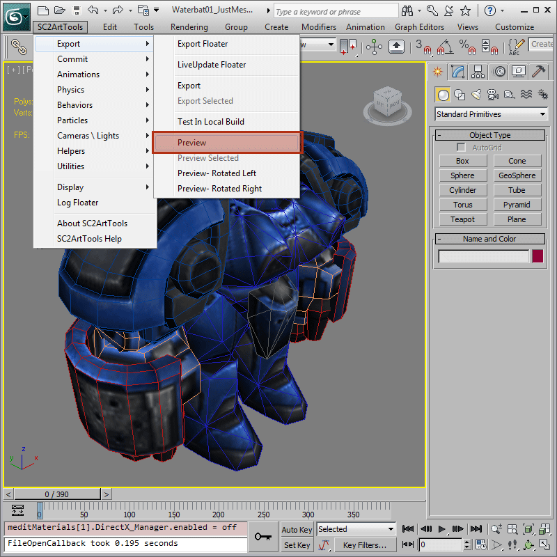 -
If all went well, you should see a window pop up with the text Preview Succeeded. If there were warnings or errors on export, your model might not work in game.
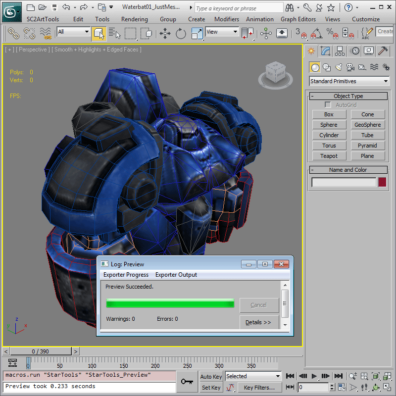 -
If you tab over to the StarCraft II Editor now, you should see a small Waterbat on top of whatever your default tileset is. Use the'Shift+F' hotkey to Zoom in on your model.
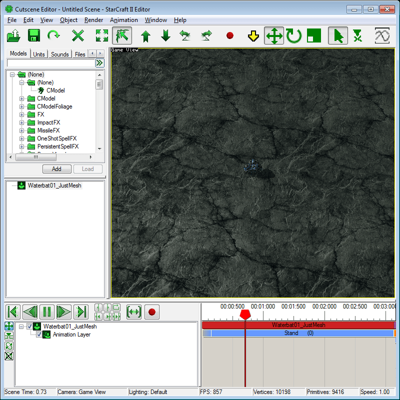
-
The Cutscene Editor has a selection model that is extremely helpful when making cutscenes, but can be distracting for quick model previews. If you would like to toggle the selection highlight, navigate to the menu item 'Render > Show Selection Highlight' and set it on or off based on your preference.
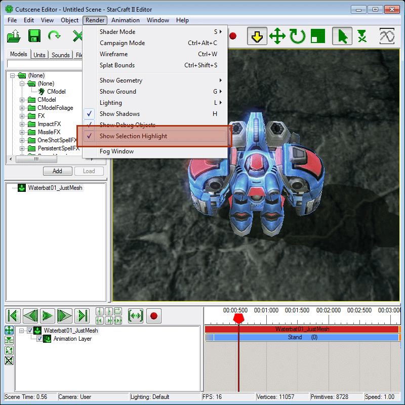
Common Textures
To understand the following steps, it is important to understand the way most Unit Textures are set up in StarCraft II. A detailed breakdown of a common setup for StarCraft II is available in Appendix: Waterbat Texture Setup.
-
To enable Team Color, we need to return to the Diffuse Texture's rollout and enable the Alpha Channel by scrolling to Color Operations and selecting RGBA in the dropdown. If you were to Preview now, you should now see Team color on your model. If your model becomes a solid color, it likely indicates a problem in your texture's Alpha Channel.
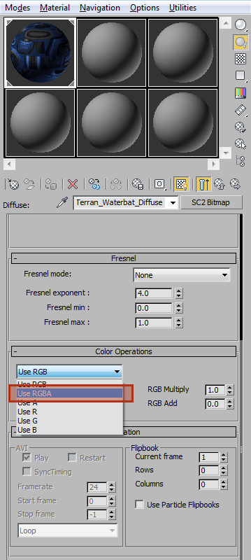 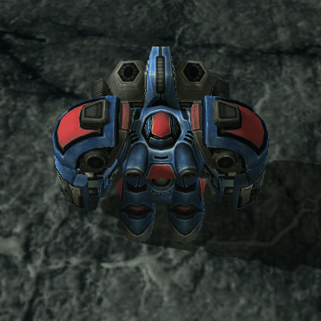 -
The Normal map enables extra surface detail and takes full advantage of StarCraft II's per-pixel lighting pipeline. In 'Material Texture Parameters' click the texture button to the right of 'Normal . . . . .' then pick a Waterbat_Norm.tga in the same manner as done for the Diffuse Texture.
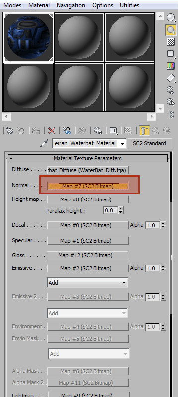 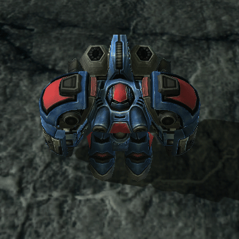 -
While the Normal map will alter the diffuse lighting, it has a more profound effect for specular lighting. We enable specular highlights by clicking the button to the right of 'Specular . . . .' and picking a texture. For the Waterbat we want 'Waterbat_Spec.tga'. We will then want to set 'Use RGB' in the dropdown in 'Color Operations', because we want to ignore the emissive mask in the alpha channel of this texture.
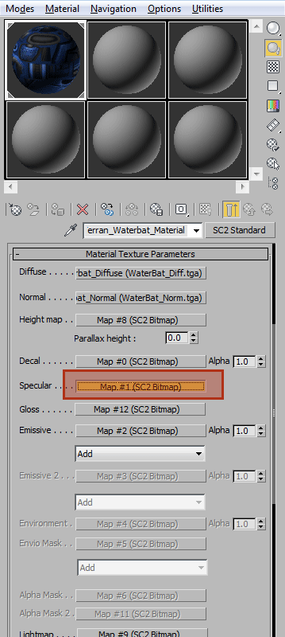
-
At this point if you 'Preview' and Preview your model again, you would start to see highlights that will move and glint with the camera, but we can make them look better.
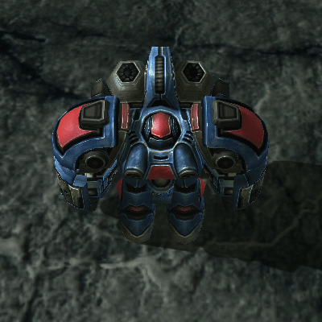 -
To get the most out of our specular lighting, we will want to adjust the Glossiness and the Intensity of our highlight. To edit how glossy the surface looks, go to the 'Material Basic Parameters' rollout, and change the 'Specular Highlights' dropdown. For the Waterbat, we want a value of 'Small', but you can pick whatever you think looks best. The highlight might not be bright enough to be noticeable. To get a really punchy highlight like most of StarCraft II, scroll down to the 'HDR' rollout and set 'Specular Multiplier' to '2.5'.
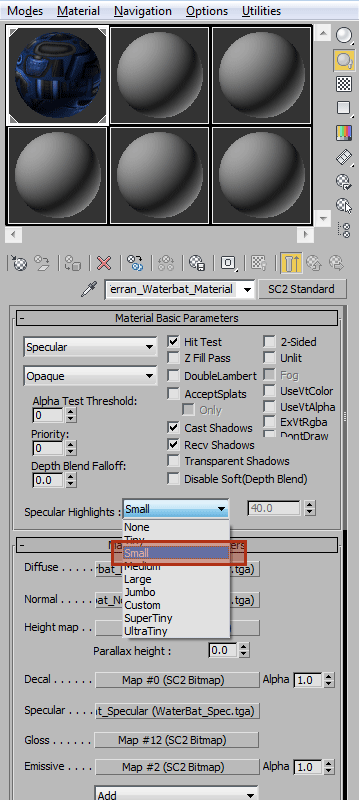 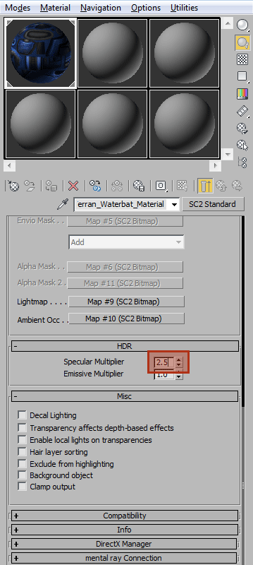 -
At this point if you 'Preview' your model again, you should see a far more detailed Waterbat standing before you.
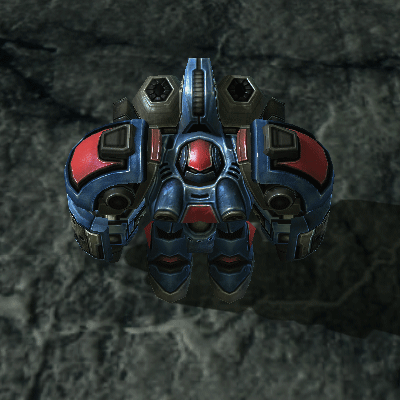
Extra Features
-
To improve the look of the Waterbat, especially in shadow, we're going to add an Emissive map and an Environment map. The default Material loadout doesn't support these features, so we must enable them. In the 'Material Basic Parameters' rollout, clicking on the dropdown in the top-left that likely reads 'Specular' and changing that to 'Environment' will enable both of these features.
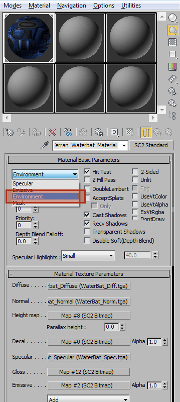 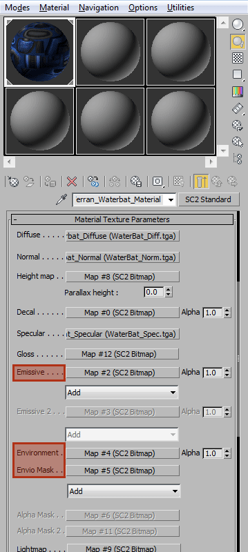 -
Enable emissive by clicking the button to the right of 'Emissive . . . .'. You will want to pick 'Waterbat_Emis.tga'. Because we will be using Team Color to alter the emissive color, we need to mask this down to a single channel. In 'Color Operations' we now need to choose 'Use R' to grab only the Red Channel of the texture and ignore the rest.
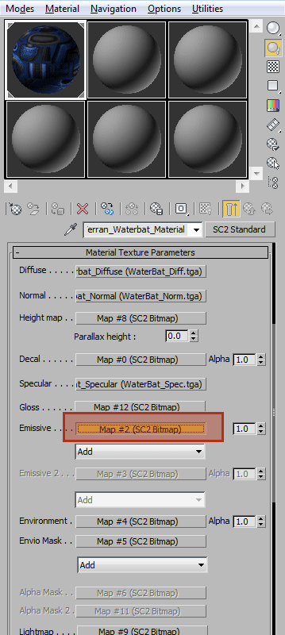 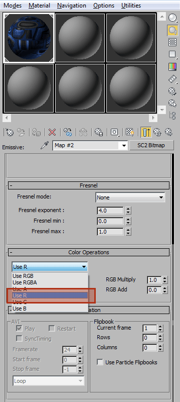 -
Below the Emissive Texture Slot there is a dropdown that likely reads 'Add'. By changing this to 'Team Color Add', the unit's glow will be tinted with the team color, which is a common feature for many of the units in StarCraft II. The emissive as-is will likely not be bright enough, so by going to the 'HDR' rollout, and setting 'Emissive Multiplier' to something higher, like '2.5', it will show up more.
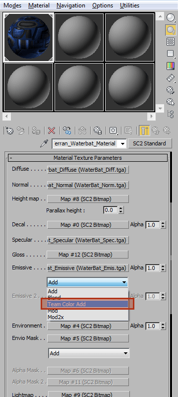 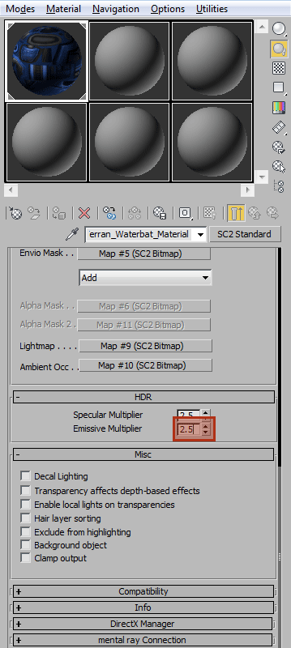 -
'Preview' again and the Waterbat should have small glowing details, such as the top of the water tanks. If you press the number keys, such as '2' through'0', the team color for the Waterbat will change and you can see what it looks like in colors like blue, purple, orange, and more. '1' will return you to the default Red Color. This should give you a sense of how well different players will be able to see your unit.
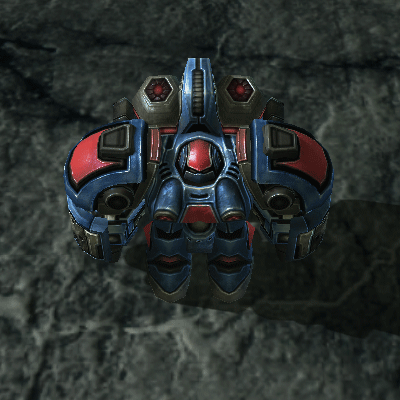 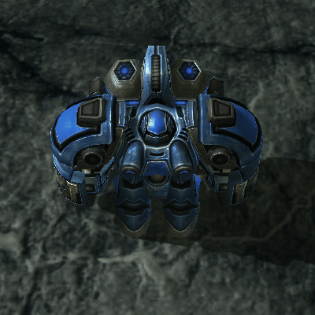 -
Environment maps are a method of adding a simulated reflection to your material. They can be either a regular image or a Cubic map. Cubic maps require a little extra processing, but provide better reflections. One has been provided as part of this tutorial. Click the button to the right of 'Environment . . . . .' to edit the map, and set it to use 'Reflect_StarTools.dds'. It is important to note that any texture with the token "Reflect" in it will get replaced on every in-game SC2Map with that SC2Map's reflection map. In 'Coordinates' for 'Mapping' you must select 'Reflective Cubic Env' if you are using a Cubic map.
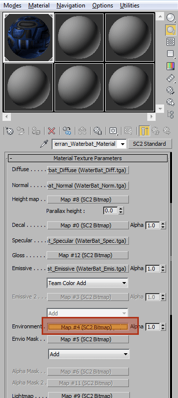 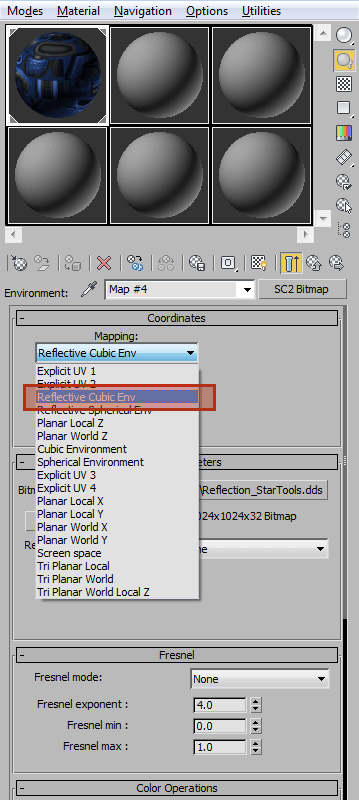 -
If you were to 'Preview' now, your Waterbat would appear more than a little shiny. You can now see how the Environment map behaves, but it looks a little ridiculous.
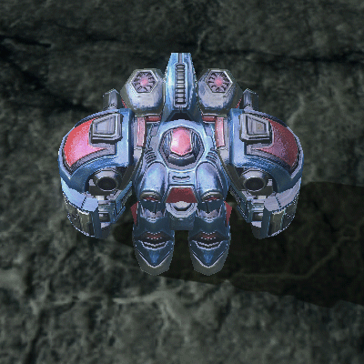 -
To mute the Environment map we use an Environment Mask. Click the button to the right of 'Envio Mask . .' to edit the map. This time, select Waterbat_Envio.tga. The Environment mask is single-channel, so you must select 'Use R' to narrow what we grab from the file to only the Red channel. Because our texture is grayscale, we could just as easily employ 'Use G' or 'Use B', but Red is the most common setting in this case amongst StarCraft II assets.
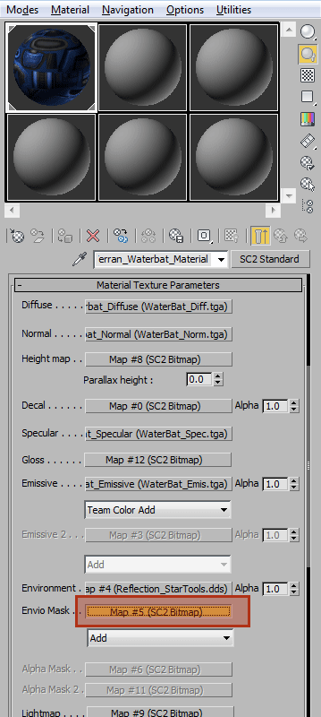 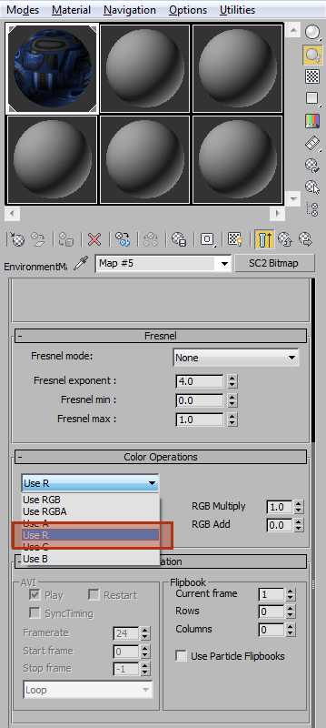 -
The Waterbat should now be looking near complete! His weapons and his water tanks now have a healthy sheen, and he's ready for the next phase of the Tutorial!
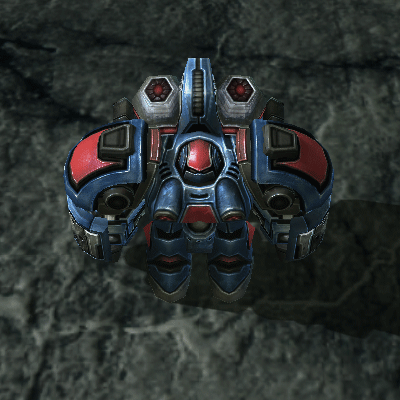
Decals
In StarCraft II, players can choose from a set of Decals to personalize their army. These are swapped in programmatically for textures with the token 'Decal' in their name. The Decal texture layer is where textures for this purpose are generally applied. Generally, a decal will use a set of UVs different from that of the basic model. As such you will need to construct a second set of UVs for the decal only.
-
To enable the decal layer, click the button to the right of 'Decal . . . . . .' in the 'Material Texture Parameters' rollout. And select the provided decal, 'Decal_StarToolsTutorial_0000_01.tga'. Because it has the token 'Decal' in the name it will mark this slot for dynamic replacement in game. The map itself will overwrite the Diffuse layer, based on the Alpha channel of the texture.
-
The Decal layer requires special mapping. First we need to set it to use a second UV set. By changing the 'Coordinates > Mapping' dropdown to 'Explicit UV 2', we can layout UVs to place the decal exactly where we want it. Because the Decal isn't a texture that we don't want to see repeating, we also need to disable 'Tile U' and 'Tile V', so that the decal will show up only in the exact place we care about.
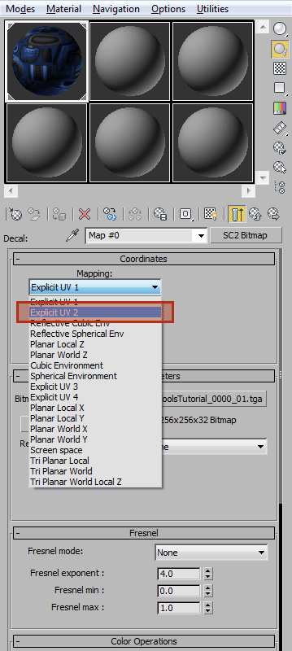
-
To apply a second UV set, select the meshes where you want the decal to show up. Then, in the 'Modify' panel, apply an 'Unwrap UVW' modifier.
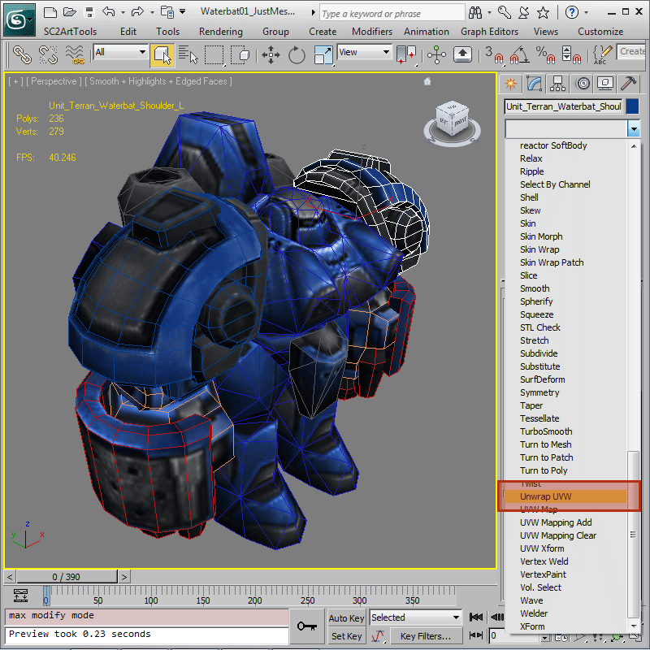 -
To edit the second UV channel, you need to first set 'Parameters > Channel > Map Channel' to '2' then hit the 'Reset UVWs' button to activate that channel for the modifier.
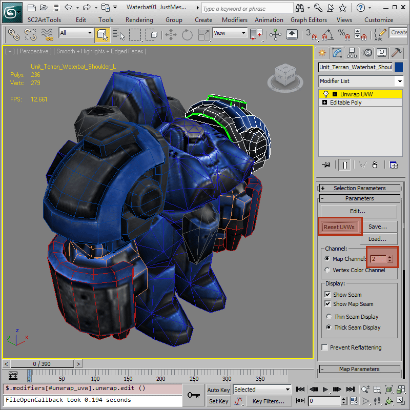 -
Hit the 'Edit. . .' button inside the modifier, and arrange your UVs so that the decal is centered where you want it. In the example, we want the decal placed in the center of the shoulder pad. Everything else has been tucked off to the side, so that it does not receive decaling. Because tiling has been disabled, it is safe for the UVs to bleed outside of 0-1 space without negative visual consequences.
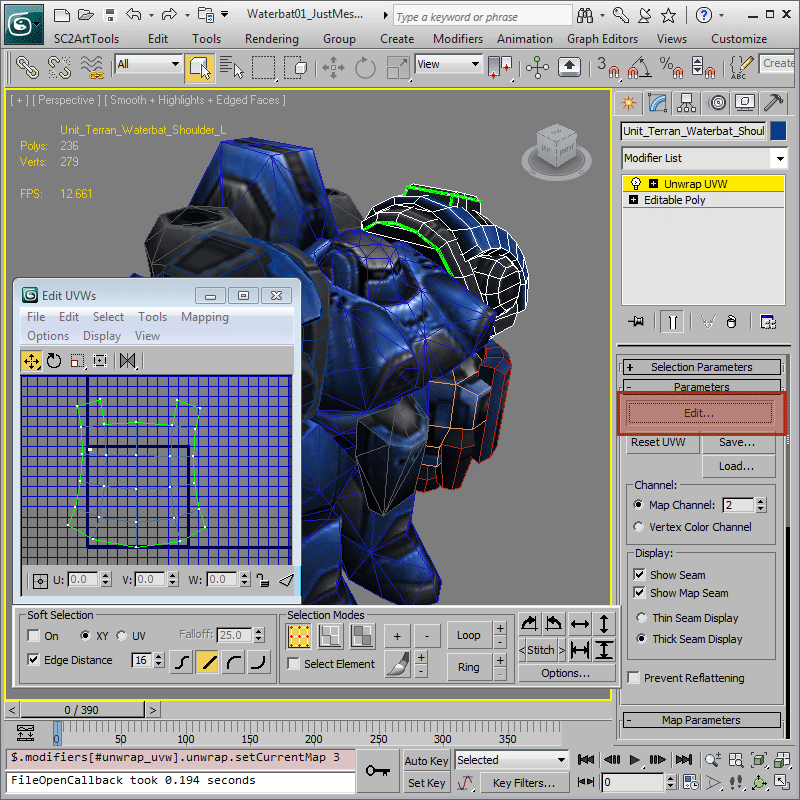 -
The Waterbat's materials should now be completely set up! A player-specific decal should now show up on its shoulder when it runs around in game. A 'Preview' of your current scene should yield a visually complete Waterbat ready to animate! You can compare your results to 'Waterbat_Tutorial02_Textured.max', which is an example file at a similar level of completion.
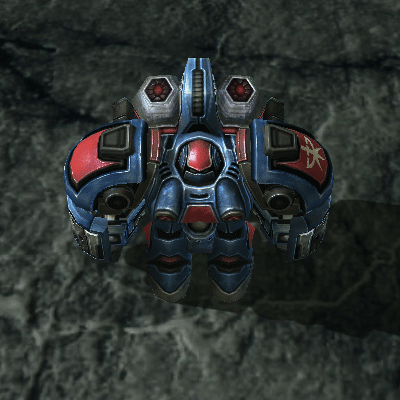